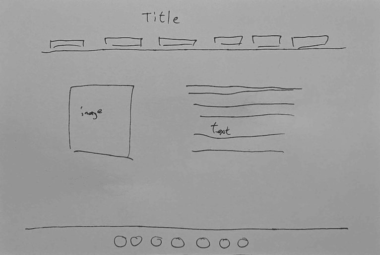

I decided to make the title the biggest, so they will know a bit about the page in general. The idea I applied from the reading is hierarchy. I made the title the biggest element on the page, so the visitor sees the site name first before anything else. To organize the pages, I try to keep the pages name as simple as possible so that if I have a bunch of pages I would be so messy and edit the wrong page. I learned that while linking the pages, every link needs the same exact file name. If the file name is wrong, the link doesn't work and just leads to a broken page. I don’t think there is anything difficult about building the navigation page, because I follow what the professor teaches in class. In the planning sketch, I wanted to make the title stay in the middle, but I don’t know how to do that. So for now everything is kept on the left side instead of in the middle. For now, I think everything feels temporary because I haven’t made any changes in the css file yet, so it is not style yet. As the site gets larger, I think the navigation will need to be more organized. A long list of links won't work forever, so I might need sections or a menu.